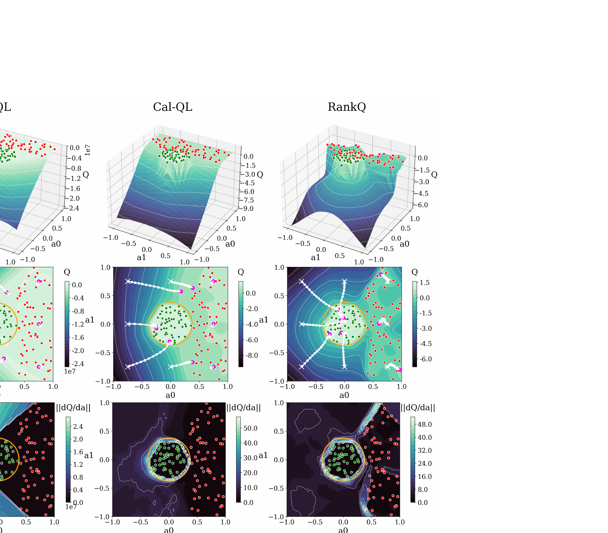

RankQ: Offline-to-Online Reinforcement Learning via Self-Supervised Action Ranking
Ni 等 · 2026 · arXiv:2605.11151 · Zotero BZ7M7Q8S
RankQ 不把所有数据外动作一律压低，而是学习动作相对排序，让 Q 地形的梯度真正指向更高质量行为。
§1 Introduction：离线 critic 为什么会让在线策略不敢探索更好的动作
离线到在线 RL 依赖 critic 把旧数据转成良好初始化，但数据外动作的 Q 没有监督。保守方法统一压低 OOD 动作，能避免离线高估；当数据本身次优时，这种悲观地形又会把所有新动作都挡在低谷，在线阶段即使获得新经验也难向更优区域移动。
RankQ 不要求给每个动作精确绝对值，而学习动作之间的相对排序。TD loss 保持 Bellman 一致，自监督 short-term ranking loss 约束高质量行为的 Q 排在低质量行为之上，并塑造更有方向性的 action gradient。在线阶段继续更新排序，使 critic 从“数据支持判别器”变成能引导改进的地形。
展开原文 · 核心机制
“models the relative quality of actions and enforces consistent ordering”
§2 Related Work：pessimism、RLPD 与 action preference
BCQ/BEAR/BRAC 约束 policy support，CQL 对 OOD Q 做悲观正则；RLPD、critic ensemble 与 Policy Expansion 关注离线数据如何继续服务在线微调。这些方法多把数据内/外作为主要边界，没有显式利用动作相对好坏。
RankQ 与 preference learning 相似地使用排序，但监督由轨迹时序、回报或自监督关系构造，并进入 Q landscape。VLA 实验说明预训练策略也可从这样的 critic 受益；不过视觉 encoder、base policy 和在线数据规模必须固定，才能把 sim-to-real 提升归因于 ranking objective。
§3 问题设定：SFT 到底漏掉了什么
VLA 预训练与 SFT 解决“从观测到动作的模仿”，但部署是闭环过程：动作会改变下一帧，错误会把策略带到演示没有覆盖的状态。传统保守离线 RL 像行为克隆锚点：能防 Q 过估计，却会妨碍在线阶段超越次优数据。
critic 学习连续动作空间的 Q landscape；成功和失败轨迹被拆成集合，再构造同状态附近的相对动作顺序。
展开原文 · 核心主张
“learning relative action preferences rather than uniformly penalizing unseen actions”
§4 方法总览：反馈信号怎么走
上一节明确了状态、动作与反馈，现在沿论文原图追踪训练信号。重点不是背模块名，而是判断：哪部分保持预训练先验，哪部分真的被 RL 改写。

1. 离线 TD 学习建立基础 Q
先在离线数据上做常规 TD 学习，得到能解释数据回报的基础 Q。这个 Q 只作为初始化；作者承认有限覆盖下它对动作间局部相对关系仍可能错误。
输入是什么：已经采集的专家演示、机器人交互轨迹或评测样本。每条数据通常包含观测、动作，以及可能存在的奖励或下一状态。
这一步究竟做什么：先在离线数据上做常规 TD 学习，得到能解释数据回报的基础 Q。这个 Q 只作为初始化；作者承认有限覆盖下它对动作间局部相对关系仍可能错误。
输出到哪里：一个分数、奖励或价值估计，用来比较候选，而不是直接控制机器人。这个结果会交给下一步“从轨迹构造自监督动作偏好对”继续处理。
为什么不能省略：只有生成候选而没有评价标准，模型不知道哪个结果更好；这一步把‘好坏’变成可比较的学习信号。
2. 从轨迹构造自监督动作偏好对
从轨迹时序、回报或自监督变换构造动作偏好对，表达同一状态附近哪个动作更好。排序监督不要求精确数值回报，因此在少数据下比拟合绝对 Q 更容易。
输入是什么：来自上一步“离线 TD 学习建立基础 Q”的产物：一个分数、奖励或价值估计，用来比较候选，而不是直接控制机器人。本步骤还会按论文设置读取当前条件、时间步或训练信号。
这一步究竟做什么：从轨迹时序、回报或自监督变换构造动作偏好对，表达同一状态附近哪个动作更好。排序监督不要求精确数值回报，因此在少数据下比拟合绝对 Q 更容易。
输出到哪里：经过本步骤处理、含义更明确的中间结果。这个结果会交给下一步“多项 ranking loss 塑造局部 Q 地形”继续处理。
为什么不能省略：它承担上下两步之间的接口；缺少它，前一步产生的信息无法以正确格式或正确含义传到下一步。
3. 多项 ranking loss 塑造局部 Q 地形
多种 ranking loss 联合塑造局部 Q 地形，使好动作不仅分数高，还在邻域中保持一致排序。这样 actor 沿 Q 梯度更新时不容易被单个尖锐的过估计峰吸走。
输入是什么：来自上一步“从轨迹构造自监督动作偏好对”的产物：经过本步骤处理、含义更明确的中间结果。本步骤还会按论文设置读取当前条件、时间步或训练信号。
这一步究竟做什么：多种 ranking loss 联合塑造局部 Q 地形，使好动作不仅分数高，还在邻域中保持一致排序。这样 actor 沿 Q 梯度更新时不容易被单个尖锐的过估计峰吸走。
输出到哪里：一个分数、奖励或价值估计，用来比较候选，而不是直接控制机器人。这个结果会交给下一步“在线交互沿更可靠梯度继续改进”继续处理。
为什么不能省略：只有生成候选而没有评价标准，模型不知道哪个结果更好；这一步把‘好坏’变成可比较的学习信号。
4. 在线交互沿更可靠梯度继续改进
在线数据加入后继续更新排序与 TD 目标。新的真实反馈会修正离线阶段的错误顺序，而更平滑的 Q 地形又让早期在线探索更安全，形成 offline-to-online 过渡。
输入是什么：来自上一步“多项 ranking loss 塑造局部 Q 地形”的产物：一个分数、奖励或价值估计，用来比较候选，而不是直接控制机器人。本步骤还会按论文设置读取当前条件、时间步或训练信号。
这一步究竟做什么：在线数据加入后继续更新排序与 TD 目标。新的真实反馈会修正离线阶段的错误顺序，而更平滑的 Q 地形又让早期在线探索更安全，形成 offline-to-online 过渡。
输出到哪里：经过本步骤处理、含义更明确的中间结果。这是图中这条链路的最终产物，随后会进入真实执行、模型更新或指标评测。
为什么不能省略：它把前面得到的内部结果落实为可执行动作、可训练模型或可解释指标，完成从方法到结果的最后一步。
§5 机制细拆：动作、价值与更新边界
上图给出了宏观流程，但真正决定训练是否稳定的是三个接口：动作以什么粒度出现、反馈怎样变成可学习信号、哪些参数允许被更新。
§6 目标函数：把直觉压缩成可检查的量
前一节说清了信号路径，这里把核心优化目标写成教学化公式。读公式时依次检查：回报影响谁、数据支持在哪里、预训练策略受到什么约束。
- $a^+,a^-$
- 排序中的较优与较差动作
- $m$
- 希望保持的价值间隔
- $Q$
- 指导在线改进的 critic
先离线塑形 Q 地形，再进入在线采样；actor 沿 critic 梯度改进并不断把新数据加入 replay。
§7 训练与评测：数字是在什么条件下得到的
只看最终成功率会隐藏数据预算、仿真/真机差异和基座强弱。本节把论文的实验对象与比较关系放回同一张表。
| 策略与动作 | critic 学习连续动作空间的 Q landscape；成功和失败轨迹被拆成集合，再构造同状态附近的相对动作顺序。 |
|---|---|
| 训练反馈 | TD loss提供绝对回报锚点，多项 ranking loss 提供局部方向，避免简单把所有 OOD 动作压成低值。 |
| 更新方式 | 先离线塑形 Q 地形，再进入在线采样；actor 沿 critic 梯度改进并不断把新数据加入 replay。 |
| 实验覆盖 | 先在 D4RL AntMaze/Adroit 验证，再在低数据与高数据 VLA 场景测试，包含 cube stacking 的 sim-to-real。 |
| 关键对照 | CQL/Cal-QL 的悲观 Q 面可能在数据边界形成陡墙；RankQ 更关心动作之间的相对顺序，让在线阶段仍有上升方向。 |
§8 结果怎么读：证据、因果与可迁移结论
VLA 低数据仿真平均领先次优方法 42.7%；真机堆叠成功率由 43.1% 提升到 88.9%。
CQL/Cal-QL 的悲观 Q 面可能在数据边界形成陡墙；RankQ 更关心动作之间的相对顺序，让在线阶段仍有上升方向。
critic 不只是数值预测器，它的局部几何直接决定在线探索会往哪里走。
§9 复现与工程检查
前一节判断了证据强度，复现时还要把训练信号对齐、时间尺度和数据统计逐项落地，否则“同名算法”也可能得到完全不同的结果。
- 成功/失败划分和正负对采样规则必须固定；可视化 Q landscape 只用于诊断，还要验证真实策略梯度与成功率一致。
- 先跑通不加 RL 的预训练/SFT 基线，并保存逐任务成功率与失败视频。
- 同时记录环境步数、真实墙钟时间、人工介入次数、更新次数和推理延迟。
- 把奖励、终止、action chunk mask 与归一化统计做成可视化单元测试。
§10 适用边界与研究启发
排序信号决定 Q 地形方向；偏好对若受数据偏差污染，在线探索会被系统性误导。
critic 不只是数值预测器，它的局部几何直接决定在线探索会往哪里走。